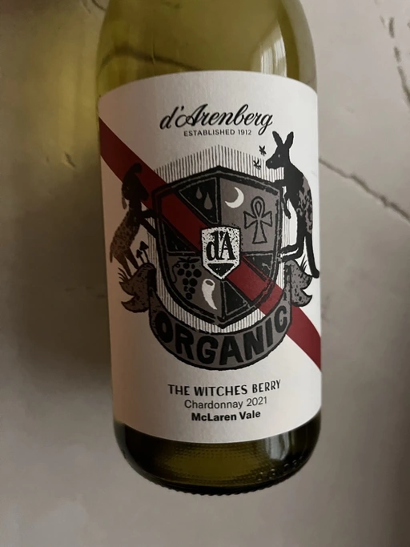

- Type
- White Still, Dry
- Producer
- d’Arenberg
- Vintage
- 2021
- Location
- Australia, McLaren Vale
- Grapes
- Chardonnay
- Alcohol
- 13.5
- Sugar
- NA
- Price
- 503 UAH
- Cellar
- N/A
Ratings
2023-01-13 - 6.50
The Witches Berry has a curious story behind it, but as a wine, it’s boring and not that good. Simple aromas of green apricot, melon and white flowers. Lacks balance and has unpleasantly prevailing bitterness in the finish. It’s like I went full retard and decided to eat green apricots together with their core. It’s not awful, but far from flawless.